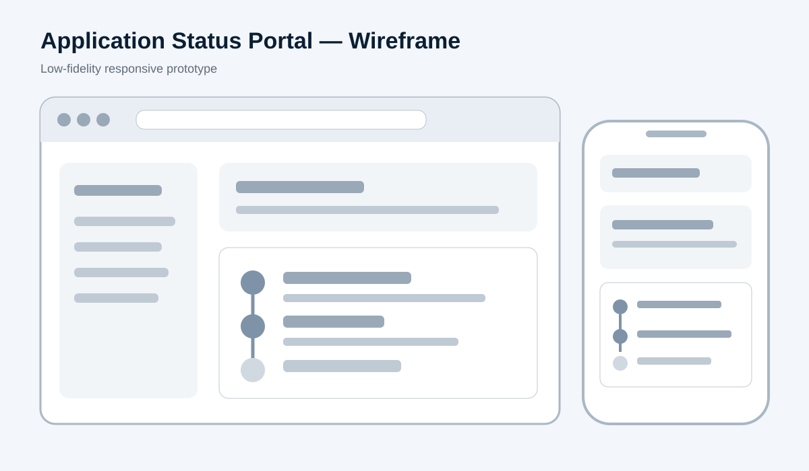
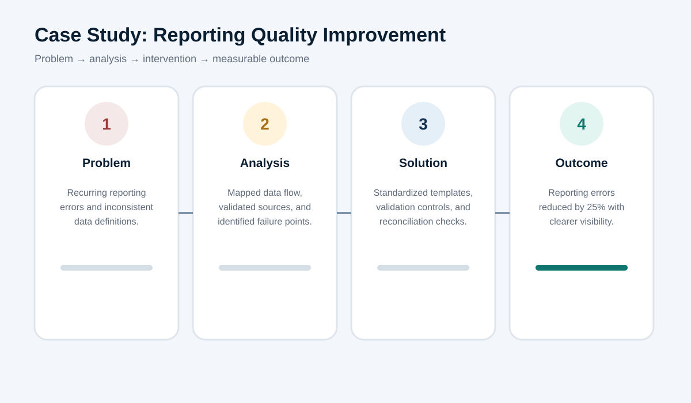

Application Status Portal Wireframe
A low-fidelity desktop and mobile concept designed to reduce status uncertainty and repeat inquiries.
View artifact →Portfolio of process maps, user journeys, requirements, wireframes, dashboards and case studies demonstrating how I analyze needs, structure information and support cross-functional delivery.
These samples are anonymized or independently created to demonstrate my approach without exposing confidential employer or client information.

A low-fidelity desktop and mobile concept designed to reduce status uncertainty and repeat inquiries.
View artifact →
A five-stage journey identifying user actions, touchpoints, friction and product opportunities.
View artifact →
A cross-functional workflow showing intake, triage, investigation, resolution and communication.
View artifact →
A concise requirements package with user stories, acceptance criteria, priorities and assumptions.
View artifact →
A portfolio recreation showing KPI design, exception analysis and performance visibility across a large store network.
View artifact →
How structured data validation, standard definitions and reconciliation controls reduced recurring reporting errors.
Read case study →I am a PMP® and CSM® certified professional with experience in business analysis, operational reporting, stakeholder coordination and process improvement. My work combines analytical problem-solving with clear documentation and disciplined follow-through.
I am particularly interested in Business Analyst, Product Analyst, Project Coordinator and Operations Analyst opportunities where I can connect business needs, data and technology.
Requirements gathering, user stories, acceptance criteria, process analysis, root cause analysis and UAT support.
Power BI, advanced Excel, KPI design, dashboards, data validation, reconciliation and trend analysis.
Scope, milestones, dependencies, RAID tracking, cross-functional coordination and status reporting.
Current-state mapping, gap identification, control design, standardization and change support.
Developed reporting solutions, investigated operational exceptions and partnered with cross-functional stakeholders across a large retail network.
Coordinated requirements, milestones, dependencies and reporting across six cross-functional teams while improving reporting consistency and cycle time.
Led a five-member team through project scoping, task coordination, stakeholder updates and delivery of strategic analysis recommendations.